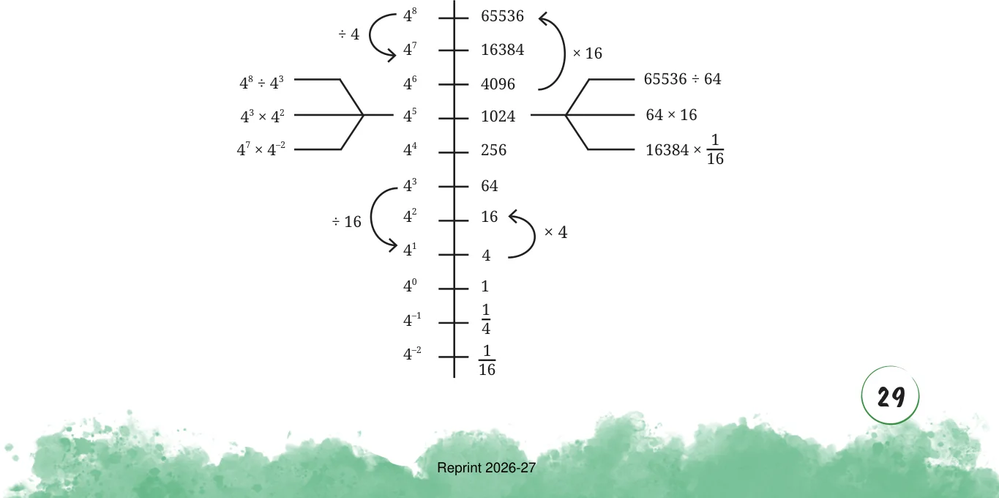

Let us arrange the powers of 4 along a line.

Yes, since \(4 \div 4 = 4\) .
How many times larger than 4 is 4 ?
\(- 2 2\)
Use the power line for 7 to answer the following questions.
\(_{7}^{7} 823543 2,401 \times 49 =\)
\(7^{6} 117649 49^{3} =\)
_{5} 16807 7
\(343 \times 2,401 =\)
_{4} 2401 7
\(7^{3} 343 \frac{16,807}{49} =\)
_{2} 49 7
\(1 7 \frac{7}{343} =\)
\(7 \frac{16,807}{8,23,543}\)
\(0 1 =\)
\(^{7} \frac{1}{7} 1,17,649 \times \frac{1}{343} =\)
\(- 1\)
\(7 \frac{1}{49}\)
\(- 2\)
\(\times = 7 - 3 \frac{1}{343} \frac{1}{343} \frac{1}{343}\)
\(- 4\)
\(\frac{1}{2401}\)